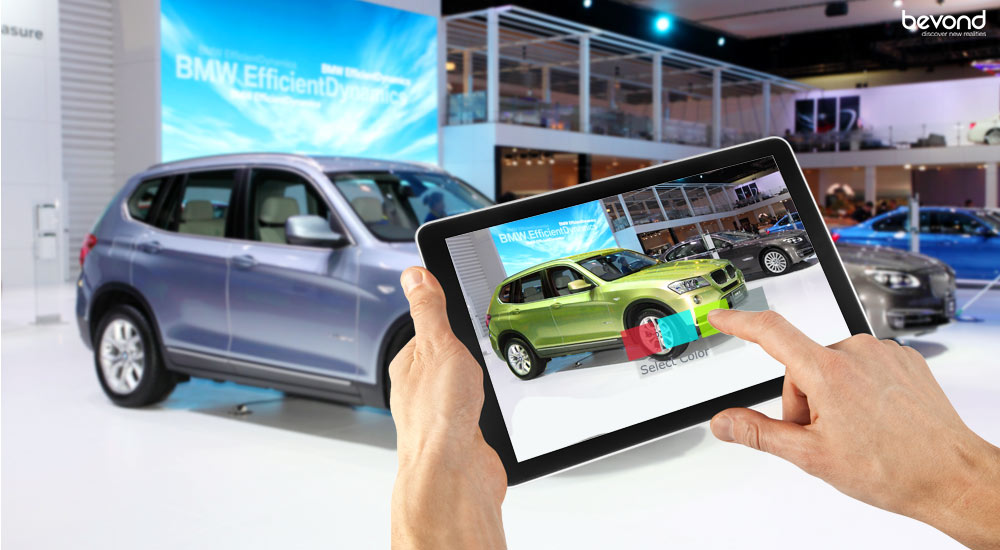
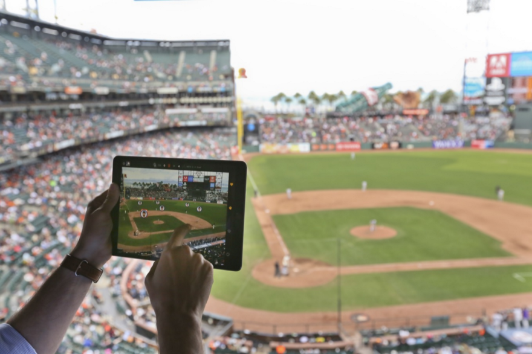
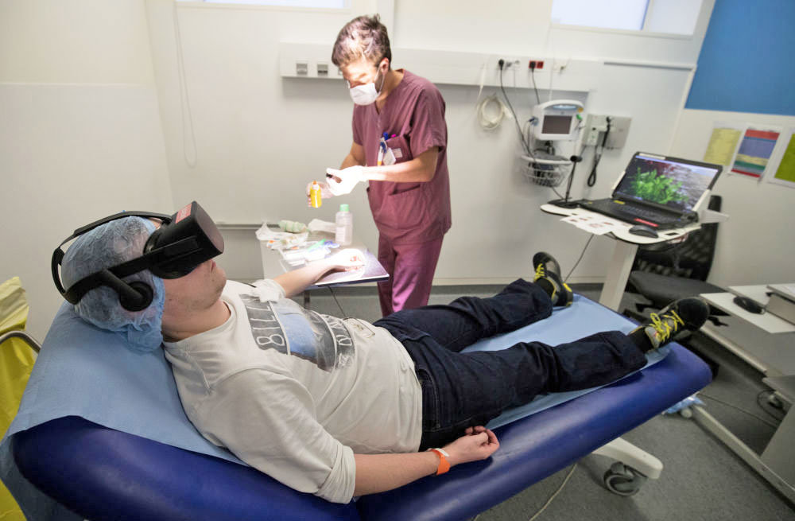
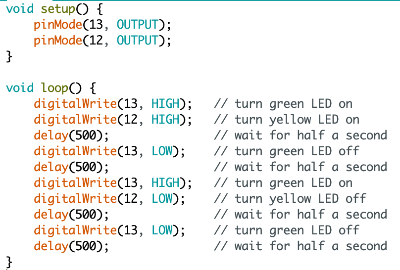
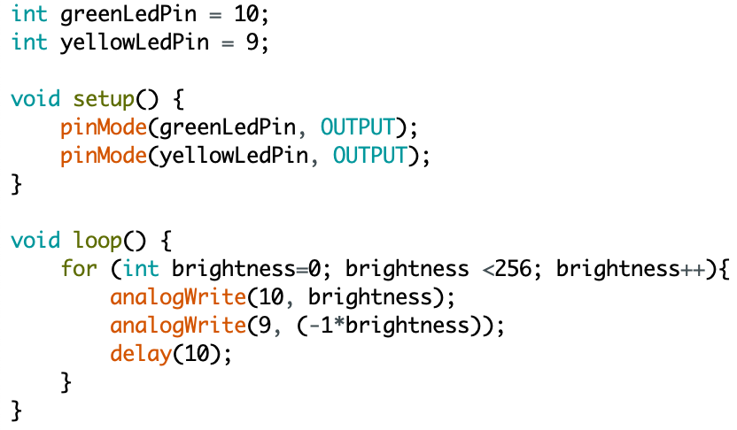
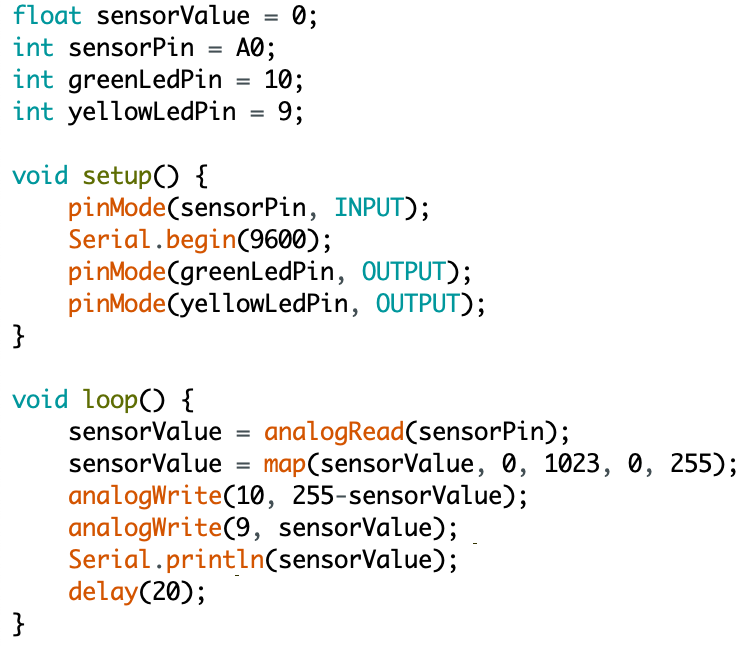
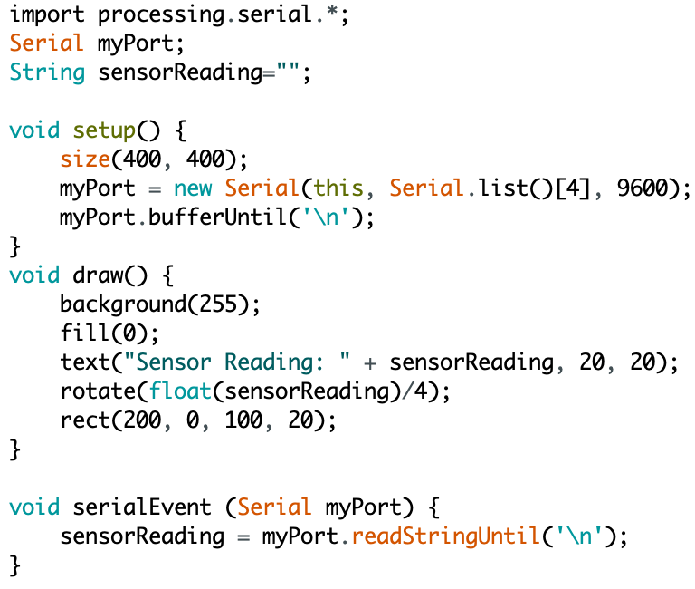
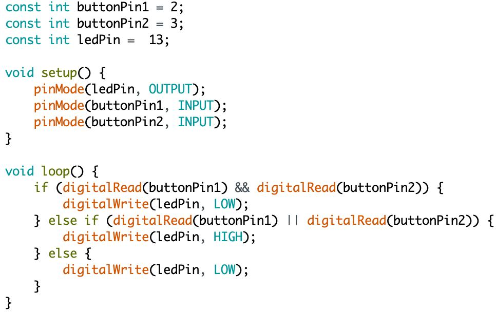
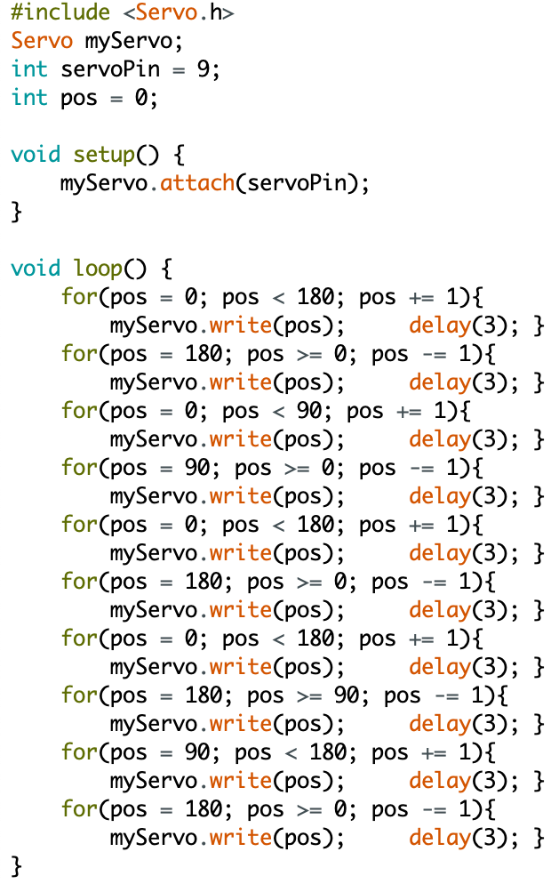
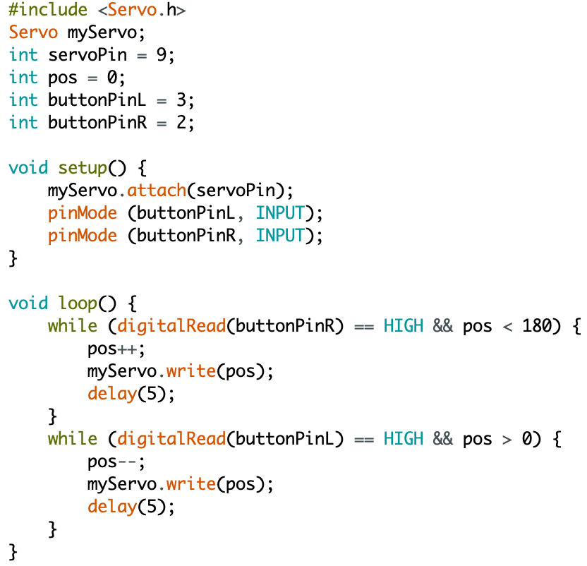

Ik ben Kyan Wies en volg het vak HCI. Mijn verwachting voor dit vak is dat ik versteld zal staan van wat ik allemaal zelf kan bouwen. Ik hoop te leren hoe ik verschillende manieren van interactie aantrekkelijk kan maken. Hieronder zijn al mijn stappen van dit vak te vinden.
Topics
Alle assignments, researches en reflecties van 4 topics (wearables, playful interactions, artificial creatures en ar&vr).
Wearables
Hieronder staat alles over de colleges die zijn gegeven over wearables.
Assignment
Op dit moment zijn tattoos er vooral voor het versieren van het lichaam, maar in de toekomst kunnen er wellicht zogenaamde 'smart tattoos' op de markt komen. Dit zijn tattoos die een boodschap kunnen overbrengen via touch, nfc, bluetooth of andere sensoren. Via de tattoo kan er dan worden gecommuniceerd zonder iets te zeggen. Dit kan handig zijn op verschillende momenten en in verschillende situaties.
De situatie waar ik het meest aan moet denken is het feesten op een festival. Op een festival heerst geen taboe op tattoos en is het niet meer dan normaal om je wat uitbundiger te kleden en je lichaam te versieren. Ook is er in negen van de tien gevallen een band of artiest aan het spelen die een onwijs hard geluid produceert. Het horen van elkaar is wel eens een uitdaging. Een smart tattoo kan de oplossing zijn voor veel van dit soort kleine ongemakken.
Aangezien de tattoo op / in de huid zit, kan het goed de activiteit van de huid meten. Hierbij kan het gaan om de temperatuur, vochtigheid of roodheid. De tattoo kan hier goed op inspelen door te laten weten dat het verkoeling, rust, water, zonnebrand of schaduw nodig heeft. De informatie kan worden doorgestuurd naar de gebruiker zelf, zodat hij of zij kan zien wat de huid en het lichaam op dat moment het hardst nodig hebben. Daarnaast zou een ander via bluetooth, nfc of een code om te scannen ook kunnen zien wat de persoon nodig heeft. Dit is vooral handig als je helemaal los gaat op je favoriete muziek en niet zo goed let op je lichaam.
Om de brug wat minder groot te maken voor het nemen van een tattoo, kan er natuurlijk worden gekozen voor een tijdelijke tattoo die niet in, maar op de huid gaat. Een goed idee zou zijn dat er op het festival een kraam te vinden is die de smart tattoos plaatst in wat voor vorm of maat je ook wil. Het hoeft dus niet duidelijk te onderscheiden zijn van een echte 'domme' (plak)tattoo.
Hieronder staat een foto van typische festivaltattoos waar goed een sensor in verwerkt zou kunnen worden.
Research
Na wat verder te speuren over smart tattoos kwam ik deze site van Microsoft tegen. De site laat een video zien waarin Microsoft bezig is met het implementeren van slimme plaktattoos. Ze worden nu vooral toegepast om controllers te vervangen. De tv bedienen met je arm is niet iets wat me nu per se heel enthousiast maakt, maar dit betekent wel dat er ruimte is voor verbetering.
Reflectie
Wearables zijn erg interessant. Zeker ook omdat de technologie niet of nauwelijks zichtbaar is. Ze worden goed verstopt in de items die we al gebruiken. Ik heb vaak wel het idee dat de wearables nog niet zo veel toevoegen. Bij bijvoorbeeld playful interactions of AR en VR lijkt de focus meer te liggen op wat er nu precies verbeterd kan worden in verschillende gebieden en situaties. Naar mijn mening is dat bij wearables nog niet het geval. Het geeft echter wel veel ruimte om hierin te groeien.
Playful interactions
Hieronder staat alles over de colleges die zijn gegeven over playful interactions.
Assignment
Playful interfaces kunnen goed worden ingezet bij het stimuleren van gewenst gedrag. De interface zorgt ervoor dat de aandacht van de taak zelf wordt weggenomen en wordt ingeruild voor een leuke ervaring.
In het hoofdgebouw van de Haagse Hogeschool zou dit ook op meerdere manieren kunnen worden toegepast. Vaak valt het me op dat het over de hele school druk is, maar waar de meeste rust wordt gevonden is in het trappenhuis. Het lijkt erop alsof niemand de trap neemt. Met de hulp van playful interfaces zou dit kunnen veranderen.
Er zou een systeem kunnen worden ingebouwd zodat het de tijd waarneemt waarmee je op de plaats van bestemming komt. Een touch-interface naast elke deur kan worden gebruikt om te selecteren hoe lang je race duurt. Wanneer je vanaf de eerste verdieping naar de 4e moet lopen, kun je op 4 klikken. De tijd gaat dan over 5 seconden in en dan is het de bedoeling zo hard mogelijk naar de 4e te rennen. Eenmaal aangekomen bij de 4e klik je op het scherm zodat de tijd stopt. Je ziet dan je tijd in beeld en je positie vergeleken met alle andere studenten (en leraren natuurlijk). Voor elke afstand is er een ander scorebord.
Een toevoeging bij dit idee zou kunnen zijn dat je je e-mailadres achterlaat, zodat je aan het eind van de maand geïnformeerd kan worden op welke plek je met je snelste tijd bent geëindigd. Ook zou er een top 3 (of alleen een winnaar) van vorige maanden en een all time fastest op het display kunnen worden weergegeven. Ter compensatie van de winst zou de winnaar misschien een gratis koffie kunnen halen bij de food court of een automaat.
Het is dus in feite de bedoeling dat er alleen gespeeld wordt, maar via de interface strijd je tegen de hele school. Doordat de activiteit bestaat uit rennen, heeft het te maken met een parallelle actie. Je zult voor de interface je naam moeten noemen, zodat je een plek op het scorebord krijgt. Ook zul je op elke trede moeten stappen om te meten of je wel echt de trap op loopt en niet stiekem een vriend op de 8e de interface laat gebruiken. Op elke verdieping zal de display de timer laten zien, zodat je onderweg een indicatie hebt van hoe lang je bezig bent. Daarnaast wordt er gebruik gemaakt van geluid. Er wordt afgeteld voor de start, een tikkende klok afgespeeld in het heetst van de strijd en een applaus afgespeeld bij het einde.
Research
Een variatie van wat bij de assignment staat kan ook worden gevonden op youtube. Hier wordt een zogenaamde doodle jump stairs uitgelicht. Het is de bedoeling om alleen op een kleur te stappen. De kleuren zijn verdeeld over de trap, zodat het wat meer moeite kost om de trap op te komen. Er zijn twee kleuren, dus je kunt tegen of met iemand anders de trap oplopen. Er is in principe geen sprake van technologie, maar dit zou gemakkelijk kunnen worden geïmplementeerd, door bijvoorbeeld het gebruik van geluid wanneer je op een kleur stapt. De actie is parallel en speelt in op knowing.
Reflectie
Dit onderwerp is heel interessant, omdat het zo krachtig is. Met een paar simpele dingen kun je de acties van mensen veranderen, zonder dat ze zich daar gedwongen door voelen. Ik vraag me af wat er allemaal wel niet mogelijk is met deze tak van technologie. Ik hoop dit later vaak terug te zien in taken die mensen nu als langdradig, vervelend, onnodig of saai ervaren, zodat we straks allemaal bezig zijn met iets goeds dat ook nog eens leuk is om te doen. Het onderwerp is wat ik ervan heb bedacht, maar toch werd ik positief verrast.
Artificial creatures
Hieronder staat alles over de colleges die zijn gegeven over artificial creatures.
Assignment
Een artificial creature is een stuk technologie dat een homeostase handhaaft. Dat wil zeggen dat het ervoor zorgt dat het zichzelf levend houdt. Het houdt een balans in stand. Voor dit assignment moest ik een bepaalde homeostase bedenken voor een attribuut.
Het attribuut waar ik de instandhouding voor bedenk is een fiets. Een fiets heeft slechts 1 primaire functie: het vervoeren van de bestuurder. Dit gaat via trappers, een ketting, twee wielen en een stuur. Een Nederlandse fiets heeft het zwaar te verduren. Tijdens het rijden wordt er veel kracht geleverd op de trappers. Dit vraagt om de nodige stevigheid van de trappers, trapas en het frame. Daarnaast moet de ketting goed strak staan en goed geolied zijn om optimaal te kunnen functioneren. De wielen worden aangedraaid door de tandwielen en door de banden worden ze beschermd tegen alle ondergronden. Ook als de fiets stilstaat is het niet in optimale bescherming. De Nederlandse regen zorgt er namelijk voor dat flink wat fietsen worden voorzien van een laag roest. Hoe zou de fiets zich voelen?
Waarschijnlijk voelt je trouwe tweewieler zich prima! Hij wordt gebruikt voor het juiste doeleind. Het is echter wel een slim plan om af en toe wat liefde te verschaffen. Dit kan gelukkig op veel verschillende manieren. Je fiets zal goed aangeven wat hij nodig heeft.
Een beetje vuil is niet erg. Echter, het is niet handig als dit tussen de ketting komt. De fiets zal dan luidkeels protesteren en de bekende ratel of piep zal te horen zijn. Een simpel doekje en wat smeerolie doen vaak wonderen.
Wanneer je fiets lege of lekke banden heeft, zal hij dit laten weten door te schoppen. Je zal dan elke kiezel voelen. Dit is het teken dat je banden meer lucht nodig hebben. Als de banden lek zijn, zal de fiets snel harder schoppen dan wanneer de banden langzaam leger raken.
De remkabels van de fiets zijn de letterlijke gevoelige snaren van de fiets. Wanneer de remkabels van de fiets kapot zijn, zal hij je negeren als je probeert te remmen.
Het komt er dus op neer dat je fiets zich niet zomaar tegen je zal keren als je 'm eens in de tijd goed verwent!
Research
Tekst hier invoeren.
Reflectie
Tekst hier invoeren.
AR & VR
Hieronder staat alles over de colleges die zijn gegeven over augmented en virtual reality.
Assignments
Augmented en virtual reality zijn begrippen waarvan de mogelijkheden bijna oneindig zijn. Er is nog veel te ontdekken en toe te passen op dit gebied. Het kan worden toegepast voor verschillende doeleinden en in verschillende situaties.
Een van die situaties kan bij je auto zijn. Veel mensen hebben de droom om ooit in een super- of hypercar te rijden. Helaas is het erg duur om zo'n auto te kopen of te huren. Daarnaast hebben mensen niet altijd de tijd om een dag te reserveren voor het rijden van zo'n auto. De oplossing is simpel: augmented reality! Voeg met een app bodykits, spoilers, grote velgen, een wit leren interieur, sportstuur en een nieuw kleurtje toe aan je auto en hij ziet eruit als een supersnelle bolide. Met augmented reality in bijvoorbeeld een bril of een lens is het nog steeds mogelijk om de echte wereld te zien, zodat het gebruik van je nieuwe asfaltvreter niet voor onveilige situaties zorgt. Daarnaast is het ook mogelijk om volledig aangepaste auto's op de snelweg langs te zien rijden. Zo wordt autorijden weer leuk, zelfs in je Fiat Panda uit '98.

Een andere manier van augmented reality kan worden toegepast in een stadion. Het is, zeker wanneer je helemaal bovenaan zit, erg lastig om precies te zien wie waar staat in bijvoorbeeld een voetbalwedstrijd. Met de hulp van een mobiel of ander device zou je kunnen zien wie waar staat. Ook zou het de mogelijkheid kunnen geven op de speler te klikken en meer informatie en statistieken te zien. Het is een goede manier om meer waarde te halen uit de bovenste rij stoelen zonder de ervaring van het zitten bij een wedstrijd te verliezen.

Nog een manier kan worden gevonden in ziekenhuizen. Van chemotherapie is bekend dat het een vreselijke ervaring is. Het wachten tot de behandeling klaar is, is geen fijn idee. VR kan hierbij helpen door via een koptelefoon en een Gear VR bril je te laten denken dat je ergens anders bent of iets anders meemaakt. Dit kan varieren van een helikoptervlucht of skydive tot het zonnen aan het water in spanje.

Research
Er bestaat een sport in Maleisië die erg lijkt op trefbal. Er is alleen geen bal te vinden. Alles wordt gesynchroniseerd via AR. Het doel is elkaar af te gooien met lichtgevende energieballen. Een bal kan worden ontweken of tegengehouden met een augmented schild.
Het concept is erg interessant, omdat het nog steeds inspeelt op de fysieke vaardigheden en het reactievermogen van de spelers. Echter is het gewone trefbal naar een hoger niveau getild en is het veel meer meeslepend. Er zijn inmiddels veel mensen bij betrokken. Er worden bijvoorbeeld toernooien georganiseerd waarbij een zaal vol fans kunnen meemaken hoe de twee teams het tegen elkaar opnemen. De volledige uitleg, regels, filpjes en spelvormen (inclusief monster battles!) zijn op deze site te vinden.
Reflectie
AR en VR zijn erg interessant. Ze kunnen alledaagse, vervelende of saaie taken erg aantrekkelijk en interresant maken. Naar mijn mening ligt de toekomst wat meer richting de augmented reality dan de virtual reality, omdat ik vind dat dit de betere vorm van technologie ververven binnen het echte leven is. Wel denk ik dat AR pas leuk wordt als het levensecht lijkt of een nuttige toevoeging is op het echte leven. Daarnaast moeten er nog ontwikkelingen komen op het gebied van praktijk. Mensen gaan niet lopen met een koelkast op hun gezicht. Pas wanneer het goed kan worden geïmplementeerd in een item dat dagelijks wordt gebruikt door een gebruiker, dan kan het wachten op een grote groei (en mijn geld).
Workshops
Alle assignments van 4 workshops (2x ardiuno, VR environments en computer vision).
Arduino
Hieronder staat alles over de twee workshops die zijn gegeven over arduino. Bij deze workshops is er met de hulp van een klein moederbord, wat lampjes, een motortje en andere kleine componenten een aantal opdrachten gemaakt. Hier werd met code een serie opdrachten verstuurd naar het moederbord, zodat dit bord steeds andere acties vertoonde. Alle opdrachten zijn hieronder te vinden.
Assignments workshop 1
Opdracht 1: Blink
Deze opdracht hield in dat het van belang was om het moederbord goed aan te sluiten op de laptop via een usb-kabel. Als dit goed is gelukt, zou er een lampje knipperen op het moederbord. Het was geen moeilijke opdracht, maar het was wel een belangrijke, omdat er anders onnodige foutjes zouden kunnen ontstaan bij de rest van de opdrachten.
Opdracht 2: Blink - Breadboard
Als het lampje op het moederbord op de correcte manier knippert, kan dit ook met een van de ledlampjes die bij de arduino-kit zit. Als het lampje, twee verbindingsdraadjes en een weerstand (die ervoor zorgt dat het ledlampje niet te veel stroom krijgt) op de goede manier in het breadboard zitten, gaat het lampje om de seconde knipperen. Wanneer de code wordt aangepast kan de snelheid van het knipperen worden veranderd.
Opdracht 3: Blink multiple leds
In deze opdracht werden niet 1, maar 2 ledlampjes aan het werk gezet. Met de hulp van een extra weerstand, extra verbindingsdraadjes en een aanpassing in de code kon dit. Nu konden de lampjes tegelijkertijd knipperen, maar ook om de beurt en in een wisselend tempo. Hieronder staat de code die is gebruikt om het groene lampje twee keer zo snel te laten knipperen als geel.

Opdracht 4: Fade LED - Analog Output
Naast het aan- en uitzetten van ledlampjes, kunnen ze ook gedimd worden. Niet alle pins op het moederbord zijn hiervoor geschikt. De samenstelling is wat aangepast en hierdoor is het mogelijk om de hoeveelheid licht die het lampje uitstraalt te genereren. De ledlampjes kunnen onafhankelijk van elkaar in- en uitfaden. Hieronder staat in code hoe het groene lampje steeds feller wordt, terwijl het gele lampje steeds minder fel wordt.

Opdracht 5: Potmeter value - Analog Input
Bij deze opdracht werd gebruik gemaakt van een draaiknop. De draaiknop moest eerst op de goede manier informatie kunnen geven voordat het ledlampjes kon aansturen. Een apart scherm in Arduino (Serial Monitor) kon de waarden laten zien op het moment dat er aan de knop gedraaid werd.
Opdracht 6: Controlling a LED with a potmeter
Hier werden de lampjes ook daadwerkelijk aangestuurd door de draaiknop. De minimale en maximale waarden van de draaiknop werden zo afgesteld, dat het de minimale en maximale waarden van de ledlampjes zou kunnen reguleren. De ietwat omslachtige code werd veranderd in simpelere taal en het was nu mogelijk om de ene lamp te laten infaden met een draai aan de knop, terwijl de andere bezig was met uitfaden.

Opdracht 7: Control the LED with light
In deze opdracht werd gebruik gemaakt van een andere sensor. Deze sensor is voor avonden buiten heel handig. Het reguleert namelijk de hoeveelheid licht op basis van de hoeveelheid licht het verkrijgt. Is er veel licht, dan zullen de ledlampjes uitstaan. Is er nauwelijks licht, dan schijnen de lampjes juist erg fel. Hier is het echter precies andersom. Weinig licht betekent geen licht van de ledlampjes en veel licht betekent veel ledlicht. Hoe dit is gedaan, staat hieronder in de code.
Opdracht 8: Voltage divider
Hier was de bedoeling dat er werd berekend hoeveel de voltage output zou zijn als de hoeveelheid licht dat binnenkomt in een van de twee (of beide) lichtsensoren zou veranderen. Wanneer de lichtsensoren dezelfde waarde binnenkrijgen, zal de V-out altijd ½ zijn van de V-in. Als ze van waarde verschillen, zullen de lampjes bijna helemaal aan of bijna helemaal uit staan.
Hier staan een aantal van die berekeningen:
Opdracht 9: Arduino and Processing
In opdracht 9 werd er gebruik gemaakt van een ander programma naast Arduino, genaamd Processing. Dit programma kan goed samenwerken met het Arduino bord. Hierbij werd het bord de input en het scherm de output. In de video is te zien wat er gebeurt wanneer de sensor meer en minder licht binnenkrijgt. De code staat erbij.

Opdracht 10: Buttons
Een button kan goed gebruikt worden voor het controleren van een ledlampje. In huizen is hetzelfde principe terug te vinden in de vorm van een lichtschakelaar. Wanneer een extra button wordt toegevoegd om een ledlampje te controleren, kan het circuit ingewikkelder worden. Hieronder staat de code (en een filmpje) waar het lampje aangaat als een van de twee buttons wordt ingedrukt, maar wanneer beide buttons worden vastgehouden, het lampje dooft.

Opdracht 11: Servomotor
De servomotor werd in deze opdracht voor het eerst gebruikt. Deze kan in totaal 160 graden draaien. Ik heb de code op zo'n manier aangepast, dat de motor de cha cha cha danst. In de code staat een paar keer 180, maar dit moet 160 zijn, aangezien dit de maximale draai van de servomotor is.

Opdracht 12: Controlling the servo with inputs
De servomotor kan naast het verkrijgen van inputs via de code ook inputs verkrijgen via een potmeter of een button. Hieronder staan de code en het filmpje van een servo die naar de ene kant draait wanneer er op een knop wordt gedrukt. Ook draait hij naar de andere kant als de andere knop wordt ingedrukt.

Opdracht 13: Sound
Deze laatste opdracht stond in het teken van geluid. Er werd gebruik gemaakt van een speaker die met de hulp van code geluid kon produceren door een trillend plaatje.
VR environments
Hieronder staat alles over de workshop die is gegeven over VR environments.
Assignments
tekst hier invoeren.
Computer vision
Hieronder staat alles over de workshop die is gegeven over computer vision.
Assignments
Tekst hier invoeren.
Excursie
Alle assignments en de reflectie van de excursie naar NEMO in Amsterdam.
Assignments
Tekst hier invoeren.
Reflectie
Tekst hier invoeren.
Labweken
Het proces per dag, het eindproduct en de reflectie van de labweken.
Proces
Hieronder staat per dag beschreven wat er in de labweken is behaald.